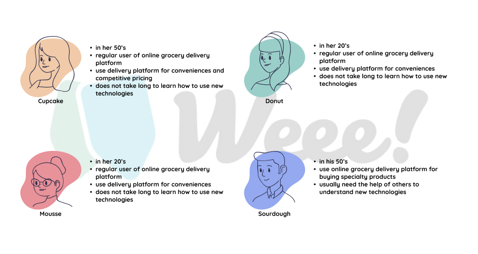
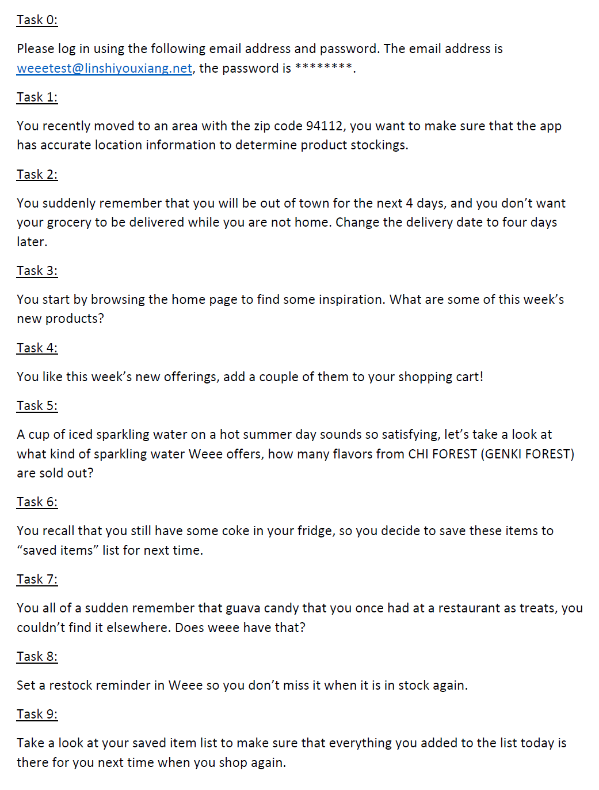
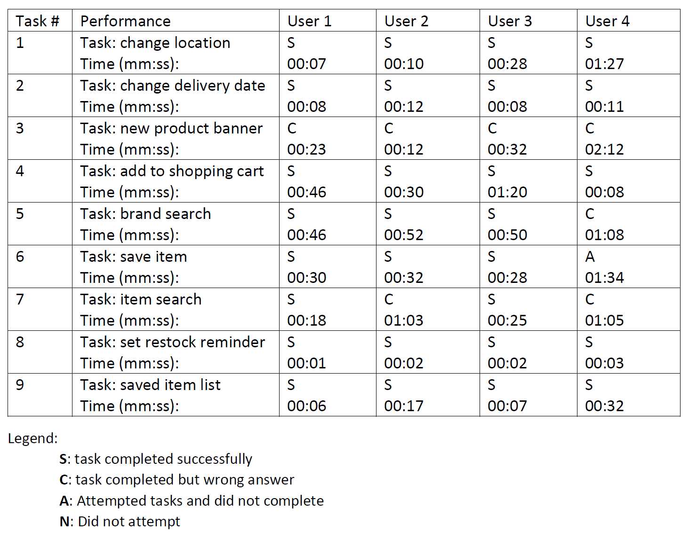
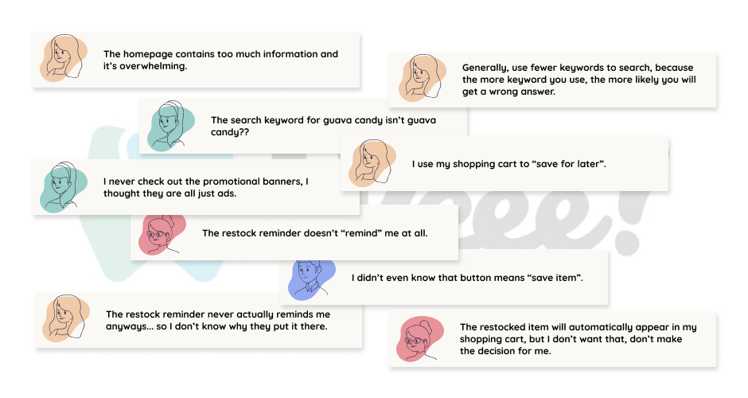

Usability Testing
Weee! Usability Study
How does search hold up when the product you want doesn't have an obvious English name?
Context
Weee! is an online Asian and Hispanic grocery platform founded in 2015, aiming to make Asian specialty food more accessible across North America. With the shift toward hybrid work and online shopping, I wanted to examine how well the platform supports its users — not just through checkout, but in the messier parts of the experience: browsing unfamiliar products and searching for items that don't have a well-known English name.
The study focused entirely on the discovery layer — product search and browsing — excluding the purchase flow. The goal was to surface friction points affecting first impressions and repeat usage, and to identify what lessons might extend to other eCommerce and grocery delivery platforms.
Research Design
I sent a screener survey to 10 people and selected 4 participants based on their answers and demographic range, aiming for a sample that was inclusive and representative of the platform's target audience.

Study participant profiles
Each session was conducted remotely with camera and audio on, allowing me to capture both task timing as quantitative data and micro-expressions as qualitative signal. Every session ended with a short debrief — an important check on my own interpretations before drawing conclusions.

The 9 study tasks

Task completion and timing data
Key Findings
The platform performs well on straightforward tasks — setting a delivery address, adding items to cart, and searching for a product by brand name all went smoothly. The friction appeared in more nuanced situations.
Product search
Searching by brand works well. Searching by function, category, or a colloquial name does not — especially for out-of-stock items. The platform ranks out-of-stock results to the bottom of the page, so a user querying something with reasonable keywords may simply conclude the item isn't carried, and give up.
The keyword that makes sense to the user doesn't always surface the right product — and an out-of-stock item buried at the bottom looks exactly like a product that was never carried at all.
Promotion banners
None of the four participants used the homepage banners to complete any task. In debrief, one assumed they were paid advertisements from manufacturers. Another found the volume overwhelming — there were 22 banner images at the time of the study. The section occupies significant homepage real estate without generating any observable engagement.
Restock reminder
Three out of four participants attempted to use this feature and found it non-functional — no notifications were ever received. One participant discovered that restocked items had been silently added to their cart without any prompt, which felt alarming rather than helpful.
A feature that adds items to your cart without asking isn't a convenient nudge — it removes the user's sense of control over their own interface.

Selected participant quotes
Design Recommendations
- Fix search ranking for out-of-stock items. Items matching the search keyword should remain at the top of results regardless of stock status, clearly labeled as sold out, with similar in-stock alternatives grouped below.
- Redesign the promotion banner section. Reduce volume, experiment with different content formats, and measure impact through click rate and conversion rather than assuming visibility equals value.
- Actually implement the restock reminder. Users should receive a notification when an item is back in stock, and the platform must ask before adding anything to the cart — per Shneiderman's 8 golden rules: support internal locus of control.
- Extend the study to less tech-savvy users. One participant underperformed relative to others in ways worth investigating further, particularly if that user profile represents a meaningful portion of the platform's target audience.